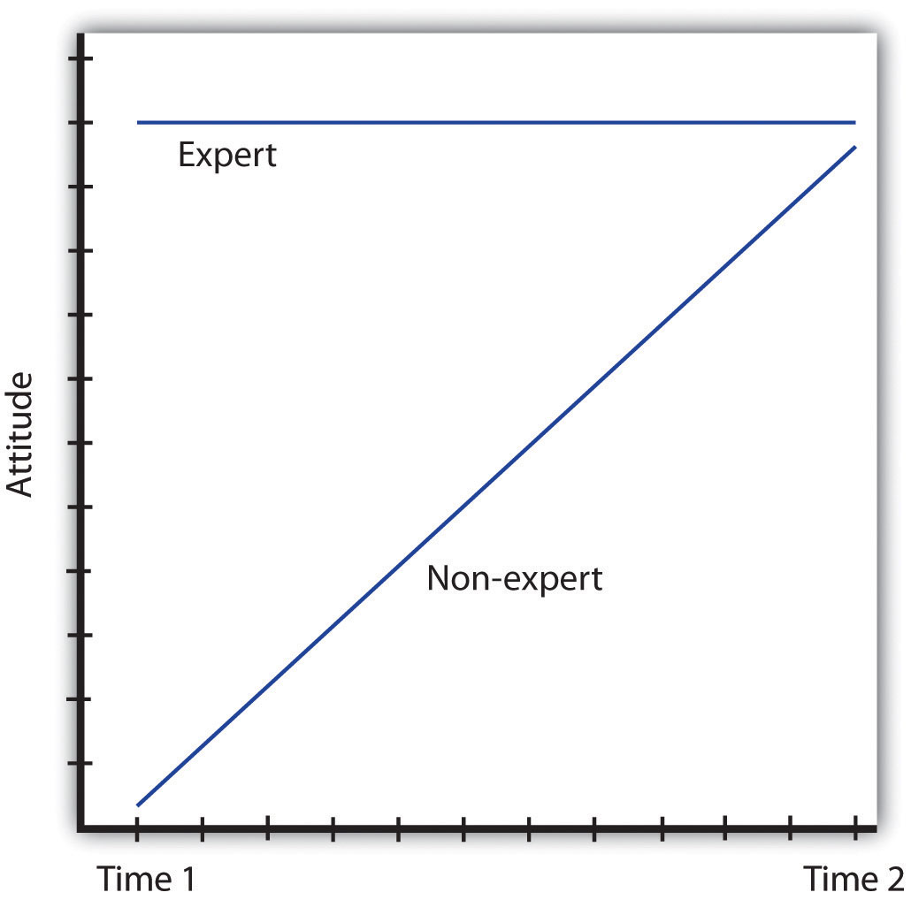
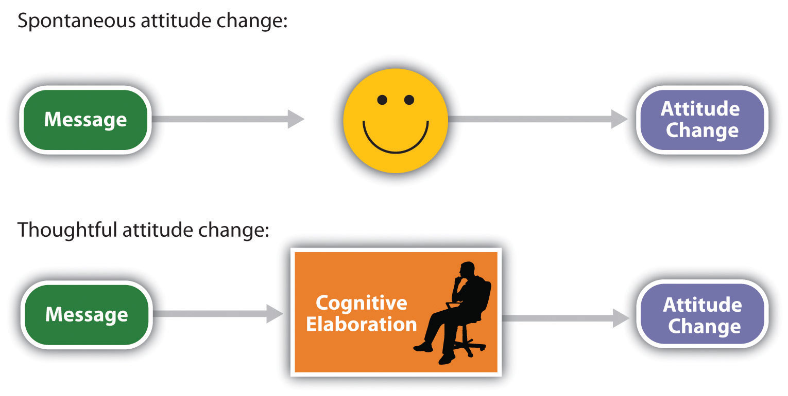
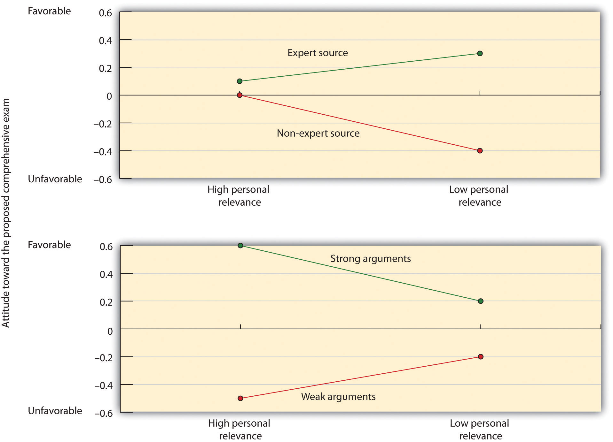

Every day we are bombarded by advertisements of every sort. The goal of these ads is to sell us cars, computers, video games, clothes, and even political candidates. The ads appear on billboards, website popup ads, TV infomercials, and…well, you name it! It’s been estimated that the average American child views over 40,000 TV commercials every year and that over $400 billion is spent annually on advertising worldwide (Strasburger, 2001).Strasburger, V. C. (2001). Children and TV advertising: Nowhere to run, nowhere to hide. Journal of Developmental and Behavioral Pediatrics, 22(3), 185–187.
There is substantial evidence that advertising is effective in changing attitudes. After the R. J. Reynolds Company started airing its Joe Camel ads for cigarettes on TV in the 1980s, Camel cigarettes’ share of sales among children increased dramatically. But persuasion can also have more positive outcomes. Persuasion is used to encourage people to donate to charitable causes, to volunteer to give blood, and to engage in healthy behaviors. The dramatic decrease in cigarette smoking (from about half of the U.S. population who smoked in 1970 to only about a quarter who smoke today) is due in large part to effective advertising campaigns.
Section 3.2 "Emotions, Stress, and Well-Being" considers how we can change people’s attitudes. If you are interested in learning how to persuade others, you may well get some ideas in this regard. If you think that advertisers and marketers have too much influence, then this section will help you understand how to resist such attempts at persuasion. Following the approach used by some of the earliest social psychologists and that still forms the basis of thinking about the power of communication, we will consider which communicators can deliver the most effective messages to which types of message recipients (Hovland, Lumsdaine, & Sheffield (1949).Hovland, C. I., Lumsdaine, A. A., & Sheffield, F. D. (1949). Experiments on mass communication. Princeton, NJ: Princeton University Press.
In order to be effective persuaders, we must first get people’s attention, then send an effective message to them, and then ensure that they process the message in the way we would like them to. Furthermore, to accomplish these goals, persuaders must take into consideration the cognitive, affective, and behavioral aspects of their methods. Persuaders also must understand how the communication they are presenting relates to the message recipient—his or her motivations, desires, and goals.
Research has demonstrated that the same message will be more effective if is delivered by a more persuasive communicator. In general we can say that communicators are more effective when they help their recipients feel good about themselves—that is, by appealing to self-concern. For instance, attractive communicators are frequently more effective persuaders than are unattractive communicators. Attractive communicators create a positive association with the product they are trying to sell and put us in a good mood, which makes us more likely to accept their messages. And as the many marketers who include free gifts, such as mailing labels or small toys, in their requests for charitable donations well know, we are more likely to respond to communicators who offer us something personally beneficial.
We’re also more persuaded by people who are similar to us in terms of opinions and values than by those whom we perceive as being different. This is of course why advertisements targeted at teenagers frequently use teenagers to present the message, and why advertisements targeted at the elderly use older communicators.
When communicators are perceived as attractive and similar to us, we tend to like them. And we also tend to trust the people that we like. The success of Tupperware parties, in which friends get together to buy products from other friends, may be due more to the fact that people like the “salesperson” than to the nature of the product. People such as the newscaster Walter Cronkite and the film stars Tom Hanks and Reese Witherspoon have been used as communicators for products in part because we see them as trustworthy and thus likely to present an unbiased message. Trustworthy communicators are effective because they allow us to feel good about ourselves when we accept their message, often without critically evaluating its content (Priester & Petty, 2003).Priester, J. R., & Petty, R. E. (2003). The influence of spokesperson trustworthiness on message elaboration, attitude strength, and advertising effectiveness. Journal of Consumer Psychology, 13(4), 408–421.
People such as the newscaster Walter Cronkite and the film stars Tom Hanks and Reese Witherspoon have been used as communicators for products in part because we see them as trustworthy and thus likely to present an unbiased message.
Expert communicators may sometimes be perceived as trustworthy because they know a lot about the product they are selling. When a doctor recommends that we take a particular drug, we are likely to be influenced because we know that he or she has expertise about the effectiveness of drugs. It is no surprise that advertisers use race car drivers to sell cars and basketball players to sell athletic shoes.
Although expertise comes in part from having knowledge, it can also be communicated by how one presents a message. Communicators who speak confidently, quickly, and in a straightforward way are seen as more expert than those who speak in a more hesitating and slower manner. Taking regular speech and speeding it up by deleting very small segments of it, so that it sounds the same but actually goes faster, makes the same communication more persuasive (MacLachlan & Siegel, 1980; Moore, Hausknecht, & Thamodaran, 1986).MacLachlan, J. H., & Siegel, M. H. (1980). Reducing the costs of TV commercials by use of time compressions. Journal of Marketing Research, 17(1), 52–57; Moore, D. L., Hausknecht, D., & Thamodaran, K. (1986). Time compression, response opportunity, and persuasion. Journal of Consumer Research, 13(1), 85–99. This is probably in part because faster speech makes the communicator seem more like an expert but also because faster speech reduces the listener’s ability to come up with counterarguments as he or she listens to the message (Megehee, Dobie, & Grant, 2003).Megehee, C. M., Dobie, K., & Grant, J. (2003). Time versus pause manipulation in communications directed to the young adult population: Does it matter? Journal of Advertising Research, 43(3), 281–292. Effective speakers frequently use this technique, and some of the best persuaders are those who speak quickly.
Although expert communicators are expected to know a lot about the product they are endorsing, they may not be seen as trustworthy if their statements seem to be influenced by external causes. People who are seen to be arguing in their own self-interest (for instance, an expert witness who is paid by the lawyers in a case or a celebrity who is paid for her endorsement of a product) may be ineffective because we may discount their communications (Eagly, Wood, & Chaiken, 1978; Wood & Eagly, 1981).Eagly, A. H., Wood, W., & Chaiken, S. (1978). Causal inferences about communicators and their effect on opinion change. Journal of Personality and Social Psychology, 36(4), 424–435; Wood, W., & Eagly, A. (1981). Stages in the analysis of persuasive messages: The role of causal attributions and message comprehension. Journal of Personality and Social Psychology, 40(2), 246–259. On the other hand, when a person presents a message that goes against external causes, for instance by arguing in favor of an opinion to a person who is known to disagree with it, we see the internal states (that the individual really believes in the message he or she is expressing) as even more powerful.
Communicators also may be seen as biased if they present only one side of an issue while completely ignoring the potential problems or counterarguments to the message. In these cases people who are informed about both sides of the topic may see the communicator as attempting to unfairly influence them.
Although we are generally very aware of the potential that communicators may deliver messages that are inaccurate or designed to influence us, and we are able to discount messages that come from sources that we do not view as trustworthy, there is one interesting situation in which we may be fooled by communicators. This occurs when a message is presented by someone that we perceive as untrustworthy. When we first hear that person’s communication we appropriately discount it and it therefore has little influence on our opinions. However, over time there is a tendency to remember the content of a communication to a greater extent than we remember the source of the communication. As a result, we may forget over time to discount the remembered message. This attitude change that occurs over time is known as the sleeper effectAttitude change that occurs over time when the content of a message is remembered but the source of the message is forgotten. (Kumkale & Albarracín, 2004).Kumkale, G. T., & Albarracín, D. (2004). The sleeper effect in persuasion: A meta-analytic review. Psychological Bulletin, 130(1), 143–172. doi: 10.1037/0033-2909.130.1.143
Figure 5.2 The Sleeper Effect
The sleeper effect occurs when we initially discount the message given by an untrustworthy or nonexpert communicator but, over time, we remember the content of the message and forget its source. The result is attitude change in the direction of the initially discounted message.
Perhaps you’ve experienced the sleeper effect. Once, I told my friends a story that I had read about one of my favorite movie stars. Only later did I remember that I had read the story while I was waiting in the supermarket checkout line, and that I had read it in the National Enquirer! I knew that the story was probably false because the newspaper is considered unreliable, but I had initially forgotten to discount that fact because I did not remember the source of the information. The sleeper effect is diagrammed in Figure 5.2 "The Sleeper Effect".
Once we have chosen a communicator, the next step is to determine what type of message we should have him or her deliver. Neither social psychologists nor advertisers are so naïve as to think that simply presenting a strong message is sufficient. No matter how good the message is, it will not be effective unless people pay attention to it, understand it, accept it, and incorporate it into their self-concept. This is why we attempt to choose good communicators to present our ads in the first place, and why we tailor our communications to get people to process them the way we want them to.
Figure 5.3
Spontaneous attitude change occurs as a direct or affective response to the message, whereas thoughtful attitude change is based on our cognitive elaboration of the message.
The messages that we deliver may be processed either spontaneously (other terms for this include peripherally or heuristically—Chen & Chaiken, 1999; Petty & Wegener, 1999)Chen, S., & Chaiken, S. (1999). The heuristic-systematic model in its broader context. In Dual-process theories in social psychology (pp. 73–96). New York, NY: Guilford Press; Petty, R. E., & Wegener, D. T. (1999). The elaboration likelihood model: Current status and controversies. In Dual-process theories in social psychology (pp. 37–72). New York, NY: Guilford Press. or thoughtfully (other terms for this include centrally or systematically). Spontaneous processing is direct, quick, and often involves affective responses to the message. Thoughtful processing, on the other hand, is more controlled and involves a more careful cognitive elaboration of the meaning of the message (Figure 5.3). The route that we take when we process a communication is important in determining whether or not a particular message changes attitudes.
Because we are bombarded with so many persuasive messages—and because we do not have the time, resources, or interest to process every message fully—we frequently process messages spontaneously. In these cases, if we are influenced by the communication at all, it is likely that it is the relatively unimportant characteristics of the advertisement, such as the likeability or attractiveness of the communicator or the music playing in the ad, that will influence us.
If we find the communicator cute, if the music in the ad puts us in a good mood, or if it appears that other people around us like the ad, then we may simply accept the message without thinking about it very much (Giner-Sorolla & Chaiken, 1997).Giner-Sorolla, R., & Chaiken, S. (1997). Selective use of heuristic and systematic processing under defense motivation. Personality and Social Psychology Bulletin, 23(1), 84–97. In these cases, we engage in spontaneous message processingThe acceptance of a persuasion attempt that occurs when the focus is on whatever is most obvious, without much attention to the message itself., in which we accept a persuasion attempt because we focus on whatever is most obvious or enjoyable, without much attention to the message itself. Shelley Chaiken (1980)Chaiken, S. (1980). Heuristic versus systematic information processing and the use of source versus message cues in persuasion. Journal of Personality and Social Psychology, 39(5), 752–766. found that students who were not highly involved in a topic, because it did not affect them personally, were more persuaded by a likeable communicator than by an unlikeable one, regardless of whether the communicator presented a good argument for the topic or a poor one. On the other hand, students who were more involved in the decision were more persuaded by the better than by the poorer message, regardless of whether the communicator was likeable or not—they were not fooled by the likeability of the communicator.
You might be able to think of some advertisements that are likely to be successful because they create spontaneous processing of the message by basing their persuasive attempts around creating emotional responses in the listeners. In these cases the advertisers use associational learning to associate the positive features of the ad with the product. Television commercials are often humorous, and automobile ads frequently feature beautiful people having fun driving beautiful cars. The slogans “The joy of cola!” “Coke adds life!” and “Be a Pepper!” are good ads in part because they successfully create positive affect in the listener.
In some cases emotional ads may be effective because they lead us to watch or listen to the ad rather than simply change the channel or doing something else. The clever and funny TV ads that are shown during the Super Bowl broadcast every year are likely to be effective because we watch them, remember them, and talk about them with others. In this case the positive affect makes the ads more salient, causing them to grab our attention. But emotional ads also take advantage of the role of affect in information processing. We tend to like things more when we are in good moods, and—because positive affect indicates that things are OK—we process information less carefully when we are in good moods. Thus the spontaneous approach to persuasion is particularly effective when people are happy (Sinclair, Mark, & Clore, 1994),Sinclair, R. C., Mark, M. M., & Clore, G. L. (1994). Mood-related persuasion depends on (mis)attributions. Social Cognition, 12(4), 309–326. and advertisers try to take advantage of this fact.
Another type of ad that is based on emotional responses is the one that uses fear appeals, such as ads that show pictures of deadly automobile accidents to encourage seatbelt use or images of lung cancer surgery to decrease smoking. By and large, fearful messages are persuasive (Das, de Wit, & Stroebe, 2003; Perloff, 2003; Witte & Allen, 2000).Das, E. H. H. J., de Wit, J. B. F., & Stroebe, W. (2003). Fear appeals motivate acceptance of action recommendations: Evidence for a positive bias in the processing of persuasive messages. Personality and Social Psychology Bulletin, 29(5), 650–664; Perloff, R. M. (2003). The dynamics of persuasion: Communication and attitudes in the 21st century (2nd ed.). Mahwah, NJ: Lawrence Erlbaum; Witte, K., & Allen, M. (2000). A meta-analysis of fear appeals: Implications for effective public health campaigns. Health Education & Behavior, 27(5), 591–615. Again, this is due in part to the fact that the emotional aspects of the ads make them salient and lead us to attend to and remember them. And fearful ads may also be framed in a way that leads us to focus on the salient negative outcomes that have occurred for one particular individual. When we see an image of a person who is jailed for drug use, we may be able to empathize with that person and imagine how we would feel if it happened to us. Thus this ad may be more effective than more “statistical” ads stating the base rates of the number of people who are jailed for drug use every year.
Fearful ads also focus on self-concern, and advertisements that are framed in a way that suggests that a behavior will harm the self are more effective than the same messages that are framed more positively. Banks, Salovey, Greener, and Rothman (1995)Banks, S. M., Salovey, P., Greener, S., & Rothman, A. J. (1995). The effects of message framing on mammography utilization. Health Psychology, 14(2), 178–184. found that a message that emphasized the negative aspects of not getting a breast cancer screening mammogram (“not getting a mammogram can cost you your life”) was more effective than a similar message that emphasized the positive aspects (“getting a mammogram can save your life”) in getting women to have a mammogram over the next year. These findings are consistent with the general idea that the brain responds more strongly to negative affect than it does to positive affect (Ito, Larsen, Smith, & Cacioppo, 1998).Ito, T. A., Larsen, J. T., Smith, N. K., & Cacioppo, J. T. (1998). Negative information weighs more heavily on the brain: The negativity bias in evaluative categorizations. Journal of Personality and Social Psychology, 75(4), 887–900.
Although laboratory studies generally find that fearful messages are effective in persuasion, they have some problems that may make them less useful in real-world advertising campaigns (Hastings, Stead, & webb, 2004).Hastings, G., Stead, M., & webb, J. (2004). Fear appeals in social marketing: Strategic and ethical reasons for concern. Psychology and Marketing, 21(11), 961–986. doi: 10.1002/mar.20043 Fearful messages may create a lot of anxiety and therefore turn people off to the message (Shehryar & Hunt, 2005).Shehryar, O., & Hunt, D. M. (2005). A terror management perspective on the persuasiveness of fear appeals. Journal of Consumer Psychology, 15(4), 275–287. doi: 10.1207/s15327663jcp1504_2 For instance, people who know that smoking cigarettes is dangerous but who cannot seem to quit may experience particular anxiety about their smoking behaviors. Fear messages are more effective when people feel that they know how to rectify the problem, have the ability to actually do so, and take responsibility for the change. Without some feelings of self-efficacy, people do not know how to respond to the fear (Aspinwall, Kemeny, Taylor, & Schneider, 1991).Aspinwall, L. G., Kemeny, M. E., Taylor, S. E., & Schneider, S. G. (1991). Psychosocial predictors of gay men’s AIDS risk-reduction behavior. Health Psychology, 10(6), 432–444. Thus if you want to scare people into changing their behavior, it may be helpful if you also give them some ideas about how to do so, so that they feel like they have the ability to take action to make the changes (Passyn & Sujan, 2006).Passyn, K., & Sujan, M. (2006). Self-accountability emotions and fear appeals: Motivating behavior. Journal of Consumer Research, 32(4), 583–589. doi: 10.1086/500488
When we process messages only spontaneously, our feelings are more likely to be important, but when we process messages thoughtfully, cognition prevails. When we care about the topic, find it relevant, and have plenty of time to spend thinking about the communication, we are likely to process the message more deliberatively, carefully, and thoughtfully (Petty & Briñol, 2008).Petty, R. E., & Briñol, P. (2008). Persuasion: From single to multiple to metacognitive processes. Perspectives on Psychological Science, 3(2), 137–147. doi: 10.1111/j.1745-6916.2008.00071.x In this case we elaborate on the communication by considering the pros and cons of the message and questioning the validity of the communicator and the message. Thoughtful message processingThe careful consideration of whether a persuasion attempt is valid or invalid. occurs when we think about how the message relates to our own beliefs and goals and involves our careful consideration of whether the persuasion attempt is valid or invalid.
When an advertiser presents a message that he or she hopes will be processed thoughtfully, the goal is to create positive cognitions about the attitude object in the listener. The communicator mentions positive features and characteristics of the product and at the same time attempts to downplay the negative characteristics. When people are asked to list their thoughts about a product while they are listening to, or right after they hear, a message, those who list more positive thoughts also express more positive attitudes toward the product than do those who list more negative thoughts (Petty & Briñol, 2008).Petty, R. E., & Briñol, P. (2008). Persuasion: From single to multiple to metacognitive processes. Perspectives on Psychological Science, 3(2), 137–147. doi: 10.1111/j.1745-6916.2008.00071.x Because the thoughtful processing of the message bolsters the attitude, thoughtful processing helps us develop strong attitudes, which are therefore resistant to counterpersuasion (Petty, Cacioppo, & Goldman, 1981).Petty, R. E., Cacioppo, J. T., & Goldman, R. (1981). Personal involvement as a determinant of argument-based persuasion. Journal of Personality and Social Psychology, 41(5), 847–855.
Both thoughtful and spontaneous messages can be effective, but it is important to know which is likely to be better in which situation and for which people. When we can motivate people to process our message carefully and thoughtfully, then we are going to be able to present our strong and persuasive arguments with the expectation that our audience will attend to them. If we can get the listener to process these strong arguments thoughtfully, then the attitude change will likely be strong and long lasting. On the other hand, when we expect our listeners to process only spontaneously—for instance, if they don’t care too much about our message or if they are busy doing other things—then we do not need to worry so much about the content of the message itself; even a weak (but interesting) message can be effective in this case. Successful advertisers tailor their messages to fit the expected characteristics of their audiences.
In addition to being motivated to process the message, we must also have the ability to do so. If the message is too complex to understand, we may rely on spontaneous cues, such as the perceived trustworthiness or expertise of the communicator (Hafer, Reynolds, & Obertynski, 1996),Hafer, C. L., Reynolds, K. L., & Obertynski, M. A. (1996). Message comprehensibility and persuasion: Effects of complex language in counterattitudinal appeals to laypeople. Social Cognition, 14, 317–337. and ignore the content of the message. When experts are used to attempt to persuade people—for instance, in complex jury trials—the messages that these experts give may be very difficult to understand. In these cases the jury members may rely on the perceived expertise of the communicator rather than his or her message, being persuaded in a relatively spontaneous way. In other cases we may not be able to process the information thoughtfully because we are distracted or tired—in these cases even weak messages can be effective, again because we process them spontaneously (Petty, Wells & Brock, 1976).Petty, R. E., Wells, G. L., & Brock, T. C. (1976). Distraction can enhance or reduce yielding to propaganda: Thought disruption versus effort justification. Journal of Personality and Social Psychology, 34(5), 874–884.
Petty, Cacioppo, and Goldman (1981)Petty, R. E., Cacioppo, J. T., & Goldman, R. (1981). Personal involvement as a determinant of argument-based persuasion. Journal of Personality and Social Psychology, 41(5), 847–855. showed how different motivations may lead to either spontaneous or thoughtful processing. In their research, college students heard a message suggesting that the administration at their college was proposing to institute a new comprehensive exam that all students would need to pass in order to graduate and then rated the degree to which they were favorable toward the idea. The researchers manipulated three independent variables:
As you can see in Figure 5.4, Petty and his colleagues found two interaction effects. The top panel of the figure shows that the students in the high personal relevance condition (left side) were not particularly influenced by the expertise of the source, whereas the students in the low personal relevance condition (right side) were. On the other hand, as you can see in the bottom panel, the students who were in the high personal relevance condition (left side) were strongly influenced by the quality of the argument, but the low personal involvement students (right side) were not.
These findings fit with the idea that when the issue was important, the students engaged in thoughtful processing of the message itself. When the message was largely irrelevant, they simply used the expertise of the source without bothering to think about the message.
Figure 5.4
Petty, Cacioppo, and Goldman (1981)Petty, R. E., Cacioppo, J. T., & Goldman, R. (1981). Personal involvement as a determinant of argument-based persuasion. Journal of Personality and Social Psychology, 41(5), 847–855. found that students for whom an argument was not personally relevant based their judgments on the expertise of the source (spontaneous processing), whereas students for whom the decision was more relevant were more influenced by the quality of the message (thoughtful processing).
Because both thoughtful and spontaneous approaches can be successful, advertising campaigns, such as those used by the Obama presidential campaign, carefully make use of both spontaneous and thoughtful messages. In some cases, the messages showed Obama smiling, shaking hands with people around him, and kissing babies; in other ads Obama was shown presenting his plans for energy efficiency and climate change in more detail.
To this point we have focused on techniques designed to change attitudes. But it is also useful to develop techniques that prevent attitude change. If you are hoping that Magritte will never puff that first cigarette, then you might be interested in knowing what her parents might be able to do to prevent it from happening.
One approach to improving an individual’s ability to resist persuasion is to help the person create a strong attitude. Strong attitudes are more difficult to change than are weak attitudes, and we are more likely to act on our strong attitudes. This suggests that Magritte’s parents might want help Magritte consider all the reasons that she should not smoke and develop strong negative affect about smoking. As Magritte’s negative thoughts and feelings about smoking become more well-defined and more integrated into the self-concept, they should have a bigger influence on her behavior.
One method of increasing attitude strength involves forewarningReminding an individual that an attempt to persuade may be forthcoming, with the expectation that the reminder will reduce persuasion.: giving people a chance to develop a resistance to persuasion by reminding them that they might someday receive a persuasive message, and allowing them to practice how they will respond to influence attempts (Sagarin & Wood, 2007).Sagarin, B. J., & Wood, S. E. (2007). Resistance to influence. In A. R. Pratkanis (Ed.), The science of social influence: Advances and future progress (pp. 321–340). New York, NY: Psychology Press. Magritte’s parents might want to try the forewarning approach. After the forewarning, when Magritte hears the smoking message from her peers, she may be less influenced by it because she was aware ahead of time that the persuasion would likely occur and had already considered how to resist it.
Forewarning seems to be particularly effective when the message that is expected to follow attacks an attitude that we care a lot about. In these cases the forewarning prepares us for action—we bring up our defenses to maintain our existing beliefs. When we don’t care much about the topic, on the other hand, we may simply change our belief before the appeal actually comes (Wood & Quinn, 2003).Wood, W., & Quinn, J. M. (2003). Forewarned and forearmed? Two meta-analysis syntheses of forewarnings of influence appeals. Psychological Bulletin, 129(1), 119–138.
Forewarning can be effective in helping people respond to persuasive messages that they will receive later.
A similar approach is to help build up the cognitive component of the attitude by presenting a weak attack on the existing attitude with the goal of helping the person create counterarguments about a persuasion attempt that is expected to come in the future. Just as an inoculation against the flu gives us a small dose of the influenza virus that helps prevent a bigger attack later, giving Magritte a weak argument to persuade her to smoke cigarettes can help her develop ways to resist the real attempts when they come in the future. This procedure—known as inoculationA mild attack on the attitude position designed to help the potential target create counterarguments to the potential persuasive attempt, with the expectation that subsequent persuasion will be reduced.—involves building up defenses against persuasion by mildly attacking the attitude position (Compton & Pfau, 2005; McGuire, 1961).Compton, J. A., & Pfau, M. (2005). Inoculation theory of resistance to influence at maturity: Recent progress in theory development and application and suggestions for future research. Communication Yearbook, 29, 97–145; McGuire, W. J. (1961). The effectiveness of supportive and refutational defenses in immunizing defenses. Sociometry, 24, 184–197. We would begin by telling Magritte the reasons that her friends might think that she should smoke (for instance, because everyone is doing it and it makes people look “cool”), therefore allowing her to create some new defenses against persuasion. Thinking about the potential arguments that she might receive and preparing the corresponding counterarguments will make the attitude stronger and more resistant to subsequent change attempts.
One difficulty with forewarning and inoculation attempts is that they may boomerang. If we feel that another person—for instance, a person who holds power over us—is attempting to take away our freedom to make our own decisions, we may respond with strong emotion, completely ignore the persuasion attempt, and perhaps even engage in the opposite behavior. Perhaps you can remember a time when you felt like your parents or someone else who had some power over you put too much pressure on you, and you rebelled against them.
The strong emotional response that we experience when we feel that our freedom of choice is being taken away when we expect that we should have choice is known as psychological reactanceA strong motivational state that prevents conformity. (Brehm, 1966; Miron & Brehm, 2006).Brehm, J. (1966). A theory of psychological reactance. New York, NY: Academic Press; Miron, A. M., & Brehm, J. W. (2006). Reaktanz theorie—40 Jahre spärer. Zeitschrift fur Sozialpsychologie, 37(1), 9–18. doi: 10.1024/0044-3514.37.1.9 If Magritte’s parents are too directive in their admonitions about not smoking, she may feel that they do not trust her to make her own decisions and are attempting to make them for her. In this case she may experience reactance and become more likely to start smoking. Erceg-Hurn and Steed (2011)Erceg-Hurn, D. M., & Steed, L. G. (2011). Does exposure to cigarette health warnings elicit psychological reactance in smokers? Journal of Applied Social Psychology, 41(1), 219–237. found that the graphic warning images that are placed on cigarette packs could create reactance in people who viewed them, potentially reducing the warnings’ effectiveness in convincing people to stop smoking.
Given the extent to which our judgments and behaviors are frequently determined by processes that occur outside of our conscious awareness, you might wonder whether it is possible to persuade people to change their attitudes or to get people to buy products or engage in other behaviors using subliminal advertising. Subliminal advertisingThe presentation of a message to the consumer without the consumer being aware that a message has been presented. occurs when a message, such as an advertisement or another image of a brand, is presented to the consumer without the person being aware that a message has been presented—for instance, by flashing messages quickly in a TV show, an advertisement, or a movie (Theus, 1994).Theus, K. T. (1994). Subliminal advertising and the psychology of processing unconscious stimuli: A review of research. Psychology and Marketing, 11(3), 271–291.
Does Subliminal Advertising Work?
If it were effective, subliminal advertising would have some major advantages for advertisers because it would allow them to promote their product without directly interrupting the consumer’s activity and without the consumer knowing that he or she is being persuaded (Trappey, 1996).Trappey, C. (1996). A meta-analysis of consumer choice and subliminal advertising. Psychology and Marketing, 13(5), 517–531. People cannot counterargue with, or attempt to avoid being influenced by, messages that they do not know they have received and this may make subliminal advertising particularly effective. Due to fears that people may be influenced to buy products out of their awareness, subliminal advertising has been legally banned in many countries, including Australia, Great Britain, and the United States.
Some research has suggested that subliminal advertising may be effective. Karremans, Stroebe, and Claus (2006)Karremans, J. C., Stroebe, W., & Claus, J. (2006). Beyond Vicary’s fantasies: The impact of subliminal priming and brand choice. Journal of Experimental Social Psychology, 42(6), 792–798. had Dutch college students view a series of computer trials in which a string of letters such as BBBBBBBBB or BBBbBBBBB was presented on the screen and the students were asked to pay attention to whether or not the strings contained a small b. However, immediately before each of the letter strings, the researchers presented either the name of a drink that is popular in Holland (“Lipton Ice”) or a control string containing the same letters as Lipton Ice (“Npeic Tol”). The priming words were presented so quickly (for only about 1/50th of a second) that the participants could not see them.
Then the students were asked to indicate their intention to drink Lipton Ice by answering questions such as “If you would sit on a terrace now, how likely is it that you would order Lipton Ice?” and also to indicate how thirsty they were at this moment. The researchers found that the students who had been exposed to the Lipton Ice primes were significantly more likely to say that they would drink Lipton Ice than were those who had been exposed to the control words, but that this was only true for the participants who said that they were currently thirsty.
On the other hand, other research has not supported the effectiveness of subliminal advertising. Charles Trappey (1996) conducted a meta-analysis in which he combined 23 research studies that had tested the influence of subliminal advertising on consumer choice. The results of his meta-analysis showed that subliminal advertising had a “negligible effect on consumer choice.” Saegert (1987)Saegert, J. (1987). Why marketing should quit giving subliminal advertising the benefit of the doubt. Psychology and Marketing, 4(2), 107–121. concluded that “marketing should quit giving subliminal advertising the benefit of the doubt” (p. 107), arguing that the influences of subliminal stimuli are usually so weak that they are normally overshadowed by the person’s own decision making about the behavior.
Even if a subliminal or subtle advertisement is perceived, previous experience with the product or similar products—or even unrelated, more salient stimuli at the moment—may easily overshadow any effect the subliminal message would have had (Moore, 1988).Moore, T. E. (1988). The case against subliminal manipulation. Psychology and Marketing, 5(4), 297–316. That is, even if we do perceive the “hidden” message, our prior attitudes or our current situation will likely have a stronger influence on our choices, potentially nullifying any effect the subliminal message would have had.
Taken together, the evidence for the effectiveness of subliminal advertising is weak and its effects may be limited to only some people and only some conditions. You probably don’t have to worry too much about being subliminally persuaded in your everyday life even if subliminal ads are allowed in your country. Of course, although subliminal advertising is not that effective, there are plenty of other indirect advertising techniques that are. Many ads for automobiles and alcoholic beverages have sexual connotations, which indirectly (even if not subliminally) associate these positive features with their products. And there are the ever more frequent “product placement” techniques, where images of brands (cars, sodas, electronics, and so forth) are placed on websites and in popular TV shows and movies.